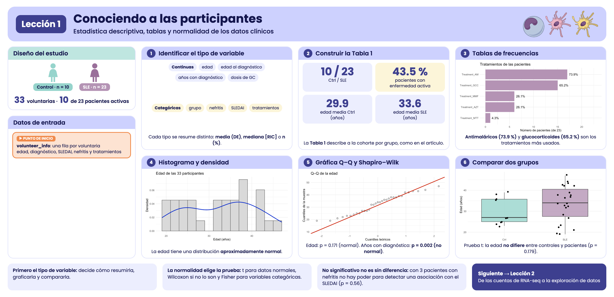
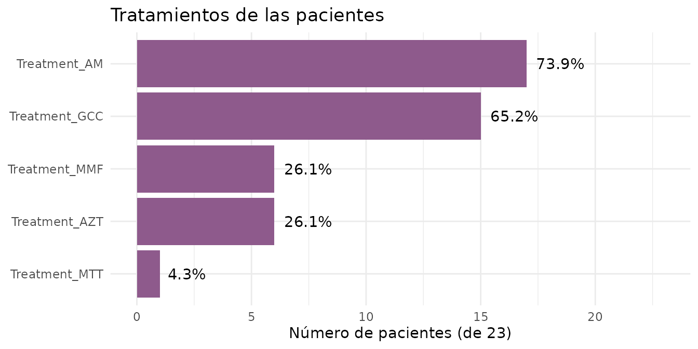
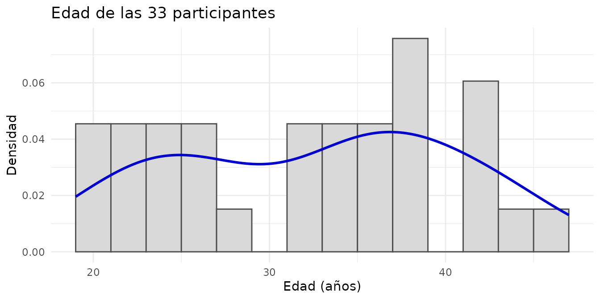
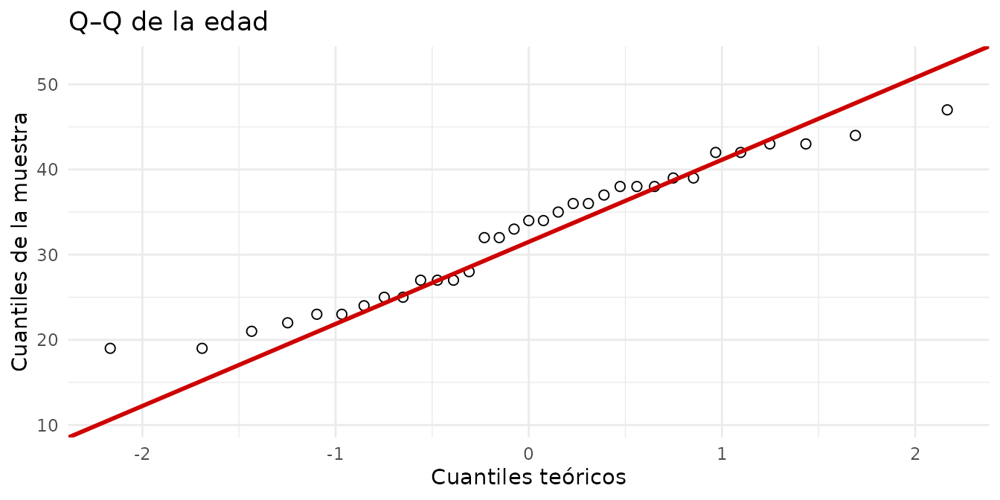
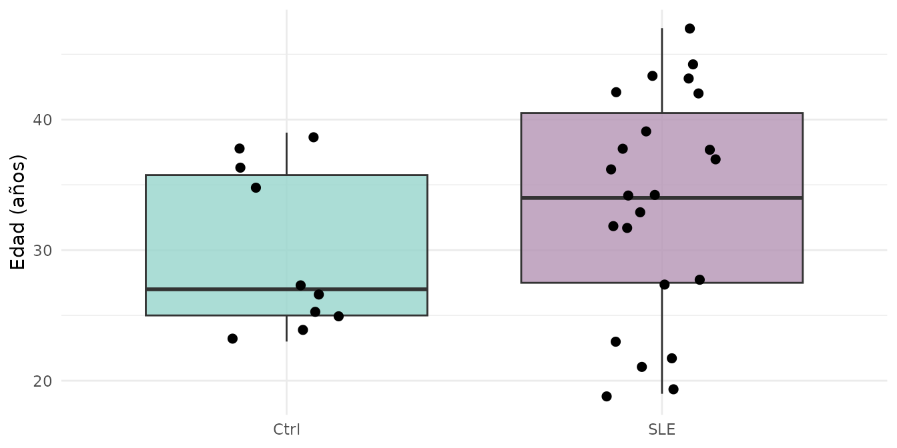
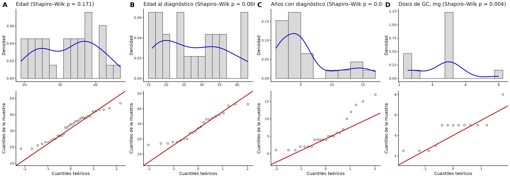

Lección 1: Conociendo a las participantes
Estadística descriptiva, tablas y normalidad de los datos clínicos
2026-10-29
Source:vignettes/clinical_es.Rmd
clinical_es.RmdBienvenida
Antes de analizar la expresión de miles de genes conviene conocer a las personas detrás de las muestras: ¿qué edad tienen?, ¿cuánto tiempo llevan con el diagnóstico?, ¿qué tratamientos reciben? En esta lección describimos a las 33 participantes del estudio con estadística descriptiva, tablas y gráficas.
Lo que necesitas saber antes: lo básico de R y de
dplyr/ggplot2. No necesitas saber nada de
RNA-seq.
Al terminar podrás:
- Distinguir variables continuas y categóricas, y saber cómo resumir cada una.
- Calcular media, mediana, desviación estándar y rango intercuartílico.
- Construir tablas de frecuencias y una Tabla 1 que describa a la cohorte.
- Evaluar si una variable sigue una distribución normal con histogramas, gráficas Q–Q y la prueba de Shapiro–Wilk.
- Elegir una prueba adecuada para comparar dos grupos.
Tiempo estimado: 45 a 60 minutos.
Mapa de la lección
flowchart LR A["volunteer_info
una fila por voluntaria"] --> B["Tipos de
variables"] B --> C["Resúmenes
numéricos"] B --> D["Tablas de
frecuencias"] C --> E["Tabla 1"] D --> E C --> F["Distribución:
histograma y Q–Q"] F --> G["Normalidad:
Shapiro–Wilk"] G --> H["Comparar
grupos"] G --> I["Figura S3"]
Glosario
Estos son los términos que usaremos. Vuelve aquí cada vez que lo necesites.
- Variable continua: puede tomar cualquier valor numérico dentro de un rango (edad, dosis).
- Variable categórica: clasifica en grupos (grupo, nefritis sí/no).
- Media: el promedio. Es sensible a valores extremos.
- Mediana: el valor del centro al ordenar los datos. Es robusta a valores extremos.
- Desviación estándar (DE): qué tanto se alejan los datos de la media, en promedio.
- Rango intercuartílico (RIC): intervalo entre el percentil 25 (Q1) y el 75 (Q3); contiene a la mitad central de los datos.
- Distribución normal: distribución simétrica en forma de campana.
- Histograma: gráfica de barras que muestra cuántos datos caen en cada intervalo.
- Densidad: versión suavizada del histograma.
- Gráfica Q–Q: compara los cuantiles de los datos con los de una distribución normal teórica.
- Prueba de Shapiro–Wilk: prueba estadística de normalidad.
- Valor p: probabilidad de observar datos tan extremos como los nuestros si la hipótesis nula fuera cierta.
- Prueba t: compara las medias de dos grupos; supone normalidad.
- Prueba de Wilcoxon (Mann–Whitney): compara dos grupos sin suponer normalidad.
- Prueba exacta de Fisher: evalúa la asociación entre dos variables categóricas; funciona bien con pocos datos.

Resumen visual de la lección 1.
1. Preparación
library(GeneExprLupusMx) # nuestros datos
library(tidyverse) # manipulación de tablas (dplyr) y gráficas (ggplot2)
library(cowplot) # unir varias gráficas en un panelUsamos los mismos colores para cada grupo en todas las lecciones:
group_color <- c(Ctrl = "#96d4ccff", SLE = "#b493b4ff")2. Los datos: volunteer_info
volunteer_info tiene una fila por
voluntaria (no por muestra), con su información clínica y de
reclutamiento:
dim(volunteer_info)
#> [1] 33 16
glimpse(volunteer_info)
#> Rows: 33
#> Columns: 16
#> $ Volunteer_ID <chr> "QR011", "QR013", "QR014", "QR017", "QR020", "Q…
#> $ Volunteer <int> 1, 2, 3, 4, 5, 6, 7, 8, 9, 10, 11, 12, 13, 14, …
#> $ Group <fct> Ctrl, Ctrl, SLE, SLE, SLE, SLE, Ctrl, SLE, Ctrl…
#> $ Age_years <int> 25, 23, 32, 22, 42, 23, 38, 32, 27, 37, 39, 47,…
#> $ Years_with_diagnosis <int> NA, NA, 5, 4, 5, 4, NA, 12, NA, 6, NA, 4, 6, 10…
#> $ Age_at_diagnosis_years <int> NA, NA, 27, 18, 37, 19, NA, 20, NA, 31, NA, 43,…
#> $ SLEDAI <int> NA, NA, 1, 1, 0, 0, NA, 1, NA, 1, NA, 0, 0, 1, …
#> $ Nephritis <fct> NA, NA, Yes, No, No, No, NA, No, NA, No, NA, Ye…
#> $ Treatment_GCC <lgl> NA, NA, TRUE, TRUE, FALSE, FALSE, NA, TRUE, NA,…
#> $ GCC_drug <chr> NA, NA, "PDN", "PDN", NA, NA, NA, "PDN", NA, "P…
#> $ GCC_dose_mg <dbl> NA, NA, 5.0, 8.0, NA, NA, NA, 5.0, NA, 2.5, NA,…
#> $ Treatment_AM <lgl> NA, NA, TRUE, FALSE, TRUE, FALSE, NA, TRUE, NA,…
#> $ Treatment_MMF <lgl> NA, NA, TRUE, FALSE, FALSE, FALSE, NA, FALSE, N…
#> $ Treatment_AZT <lgl> NA, NA, FALSE, FALSE, TRUE, FALSE, NA, TRUE, NA…
#> $ Treatment_MTT <lgl> NA, NA, FALSE, FALSE, FALSE, FALSE, NA, FALSE, …
#> $ Time_of_recruitment <date> 2022-06-01, 2022-06-01, 2022-06-01, 2022-06-01…Muchas columnas solo tienen sentido para las pacientes (por ejemplo,
los años con diagnóstico), así que en los controles valen
NA. Guardamos a las pacientes en un objeto aparte, porque
lo usaremos seguido:
3. Paso 1: identificar el tipo de cada variable
El tipo de variable decide cómo resumirla, cómo graficarla y qué prueba usar:
| Tipo | Variables en volunteer_info
|
Se resume con | Se grafica con |
|---|---|---|---|
| Continua |
Age_years, Age_at_diagnosis_years,
Years_with_diagnosis, GCC_dose_mg
|
media (DE) o mediana [RIC] | histograma, cajas, Q–Q |
| Categórica |
Group, Nephritis, SLEDAI
(0/1), GCC_drug
|
n (%) | barras |
| Lógica (sí/no) |
Treatment_GCC, Treatment_AM,
Treatment_MMF, Treatment_AZT,
Treatment_MTT
|
n (%) | barras |
| Fecha | Time_of_recruitment |
rango, conteo por mes | barras por fecha |
SLEDAI está guardada como número (0 o 1), pero es
categórica: 1 indica enfermedad activa (puntaje SLEDAI
≥ 6) y 0, sin actividad o con actividad baja (0–5 puntos). Promediarla
no tendría mucho sentido; conviene contarla.
4. Paso 2: resumir variables continuas
4.1 Media, mediana y dispersión
Empecemos con la edad, comparando controles y pacientes:
volunteer_info %>%
group_by(Group) %>%
summarise(n = n(),
mean = mean(Age_years),
sd = sd(Age_years),
median = median(Age_years),
q1 = quantile(Age_years, 0.25),
q3 = quantile(Age_years, 0.75),
min = min(Age_years),
max = max(Age_years))
#> # A tibble: 2 × 9
#> Group n mean sd median q1 q3 min max
#> <fct> <int> <dbl> <dbl> <dbl> <dbl> <dbl> <int> <int>
#> 1 Ctrl 10 29.9 6.31 27 25 35.8 23 39
#> 2 SLE 23 33.6 8.54 34 27.5 40.5 19 47Las pacientes tienen, en promedio, unos 4 años más que los controles. En la sección 8 veremos si esa diferencia es mayor de lo que esperaríamos por azar.
4.2 Resumir varias variables a la vez
Para las variables que solo existen en las pacientes, pasamos la
tabla a formato largo y resumimos cada variable.
na.rm = TRUE ignora los valores faltantes:
continuous_vars <- c("Age_at_diagnosis_years", "Years_with_diagnosis", "GCC_dose_mg")
patients %>%
pivot_longer(all_of(continuous_vars), names_to = "variable", values_to = "value") %>%
group_by(variable) %>%
summarise(n = sum(!is.na(value)),
mean = mean(value, na.rm = TRUE),
sd = sd(value, na.rm = TRUE),
median = median(value, na.rm = TRUE),
min = min(value, na.rm = TRUE),
max = max(value, na.rm = TRUE))
#> # A tibble: 3 × 7
#> variable n mean sd median min max
#> <chr> <int> <dbl> <dbl> <dbl> <dbl> <dbl>
#> 1 Age_at_diagnosis_years 23 27.8 8.97 27 16 43
#> 2 GCC_dose_mg 13 4.5 1.54 5 2.5 8
#> 3 Years_with_diagnosis 23 5.78 4.67 4 1 17Observa que GCC_dose_mg tiene n = 13,
aunque 15 pacientes reciben glucocorticoides: en dos casos no se
registró la dosis.
¿Media o mediana? Si los datos son simétricos, media
y mediana se parecen y la media (con su DE) es un buen resumen. Si hay
valores extremos o la distribución está sesgada, usa la mediana y el
RIC. En Years_with_diagnosis, la mediana (4 años) es menor
que la media: unas pocas pacientes con muchos años de diagnóstico
“jalan” la media hacia arriba.
5. Paso 3: tablas de variables categóricas
5.2 Tratamientos
Cada tratamiento está en su propia columna
(TRUE/FALSE). Para contarlos todos juntos, los
pasamos a formato largo. Al sumar TRUE/FALSE,
R cuenta los TRUE:
treatments <- patients %>%
pivot_longer(starts_with("Treatment_"), names_to = "treatment", values_to = "receives") %>%
group_by(treatment) %>%
summarise(n = sum(receives), percent = round(100 * mean(receives), 1)) %>%
arrange(desc(n))
knitr::kable(treatments, col.names = c("Tratamiento", "n", "%"))| Tratamiento | n | % |
|---|---|---|
| Treatment_AM | 17 | 73.9 |
| Treatment_GCC | 15 | 65.2 |
| Treatment_AZT | 6 | 26.1 |
| Treatment_MMF | 6 | 26.1 |
| Treatment_MTT | 1 | 4.3 |
knitr::kable() convierte cualquier tabla de R en una
tabla con formato para documentos como este.
ggplot(treatments, aes(x = reorder(treatment, n), y = n)) +
geom_col(fill = group_color["SLE"]) +
geom_text(aes(label = paste0(percent, "%")), hjust = -0.2) +
coord_flip() +
scale_y_continuous(limits = c(0, 23)) +
labs(x = NULL, y = "Número de pacientes (de 23)", title = "Tratamientos de las pacientes") +
theme_minimal()
Los antimaláricos (AM) y los glucocorticoides
(GCC) son los tratamientos más frecuentes.
5.3 Tablas de contingencia
Una tabla de contingencia cruza dos variables categóricas. ¿Qué glucocorticoide y qué dosis recibe cada paciente?
table(drug = patients$GCC_drug, dose_mg = patients$GCC_dose_mg, useNA = "ifany")
#> dose_mg
#> drug 2.5 3 5 8 <NA>
#> PDN 3 1 6 1 0
#> PDS 0 0 2 0 2
#> <NA> 0 0 0 0 8useNA = "ifany" muestra también los faltantes: 8
pacientes no reciben glucocorticoides (<NA> en ambas)
y 2 reciben PDS sin dosis registrada.
Reto 1. ¿Cuántas pacientes reciben 0, 1, 2 o 3
tratamientos inmunosupresores distintos de los glucocorticoides
(AM, MMF, AZT,
MTT)?
Pista: rowSums() suma columnas fila por fila;
los TRUE cuentan como 1.
Ver solución
patients %>%
mutate(n_treatments = rowSums(across(c(Treatment_AM, Treatment_MMF,
Treatment_AZT, Treatment_MTT)))) %>%
dplyr::count(n_treatments)
#> n_treatments n
#> 1 0 6
#> 2 1 6
#> 3 2 9
#> 4 3 2La mayoría de las pacientes recibe uno o dos de estos tratamientos; 6 no reciben ninguno.
6. Paso 4: la Tabla 1
Casi todos los artículos clínicos incluyen una Tabla 1 que describe a los participantes por grupo. La construiremos con tres funciones pequeñas que convierten una columna en texto con el formato habitual:
mean_sd <- function(x) sprintf("%.1f (%.1f)", mean(x, na.rm = TRUE), sd(x, na.rm = TRUE))
median_iqr <- function(x) sprintf("%.1f [%.1f–%.1f]", median(x, na.rm = TRUE),
quantile(x, 0.25, na.rm = TRUE), quantile(x, 0.75, na.rm = TRUE))
n_pct <- function(x) sprintf("%d (%.0f%%)", sum(x, na.rm = TRUE), 100 * mean(x, na.rm = TRUE))
mean_sd(volunteer_info$Age_years)
#> [1] "32.5 (8.0)"Ahora aplicamos cada función a cada grupo. summarise()
crea una columna por característica (con nombres cortos en inglés) y
luego “giramos” la tabla para que los grupos queden como columnas:
table1 <- volunteer_info %>%
group_by(Group) %>%
summarise(
n = as.character(n()),
age = mean_sd(Age_years),
age_at_diagnosis = mean_sd(Age_at_diagnosis_years),
years_with_diagnosis = median_iqr(Years_with_diagnosis),
sledai_active = n_pct(SLEDAI == 1),
nephritis = n_pct(Nephritis == "Yes"),
gcc = n_pct(Treatment_GCC),
am = n_pct(Treatment_AM),
mmf = n_pct(Treatment_MMF),
azt = n_pct(Treatment_AZT),
mtt = n_pct(Treatment_MTT)
) %>%
pivot_longer(-Group, names_to = "characteristic") %>%
pivot_wider(names_from = Group, values_from = value)
table1
#> # A tibble: 11 × 3
#> characteristic Ctrl SLE
#> <chr> <chr> <chr>
#> 1 n 10 23
#> 2 age 29.9 (6.3) 33.6 (8.5)
#> 3 age_at_diagnosis NaN (NA) 27.8 (9.0)
#> 4 years_with_diagnosis NA [NA–NA] 4.0 [2.0–6.5]
#> 5 sledai_active 0 (NaN%) 10 (43%)
#> 6 nephritis 0 (NaN%) 3 (13%)
#> 7 gcc 0 (NaN%) 15 (65%)
#> 8 am 0 (NaN%) 17 (74%)
#> 9 mmf 0 (NaN%) 6 (26%)
#> 10 azt 0 (NaN%) 6 (26%)
#> 11 mtt 0 (NaN%) 1 (4%)Para presentarla, cambiamos los nombres cortos por etiquetas legibles. Guardarlas en un vector aparte separa los datos de su presentación:
table1_labels <- c(
n = "n",
age = "Edad, años, media (DE)",
age_at_diagnosis = "Edad al diagnóstico, media (DE)",
years_with_diagnosis = "Años con diagnóstico, mediana [RIC]",
sledai_active = "SLEDAI activo (≥ 6), n (%)",
nephritis = "Nefritis, n (%)",
gcc = "Glucocorticoides, n (%)",
am = "Antimaláricos, n (%)",
mmf = "Micofenolato, n (%)",
azt = "Azatioprina, n (%)",
mtt = "Metotrexato, n (%)"
)
table1 %>%
mutate(characteristic = table1_labels[characteristic]) %>%
knitr::kable(col.names = c("Característica", "Ctrl", "SLE"))| Característica | Ctrl | SLE |
|---|---|---|
| n | 10 | 23 |
| Edad, años, media (DE) | 29.9 (6.3) | 33.6 (8.5) |
| Edad al diagnóstico, media (DE) | NaN (NA) | 27.8 (9.0) |
| Años con diagnóstico, mediana [RIC] | NA [NA–NA] | 4.0 [2.0–6.5] |
| SLEDAI activo (≥ 6), n (%) | 0 (NaN%) | 10 (43%) |
| Nefritis, n (%) | 0 (NaN%) | 3 (13%) |
| Glucocorticoides, n (%) | 0 (NaN%) | 15 (65%) |
| Antimaláricos, n (%) | 0 (NaN%) | 17 (74%) |
| Micofenolato, n (%) | 0 (NaN%) | 6 (26%) |
| Azatioprina, n (%) | 0 (NaN%) | 6 (26%) |
| Metotrexato, n (%) | 0 (NaN%) | 1 (4%) |
Tabla 1. Características sociodemográficas y clínicas de las 33 voluntarias: 10 controles sanas (Ctrl) y 23 pacientes con lupus eritematoso sistémico (SLE). Las variables continuas se resumen como media (DE) o mediana [RIC], y las categóricas como n (%). Se consideró enfermedad activa un puntaje SLEDAI ≥ 6. DE, desviación estándar; RIC, rango intercuartílico; SLEDAI, SLE Disease Activity Index.
La tabla original se encuentra en el artículo.
En los controles, las filas clínicas aparecen como NA,
NaN o 0 (NaN%) porque esas variables no
aplican: no tienen diagnóstico ni tratamiento. En un artículo las
escribiríamos como “—”.
Reto 2. Reemplaza los valores sin sentido de los
controles por "—".
Pista: grepl("NA|NaN", Ctrl) detecta esos
valores.
Ver solución
table1 %>%
mutate(Ctrl = ifelse(grepl("NA|NaN", Ctrl), "—", Ctrl),
characteristic = table1_labels[characteristic]) %>%
knitr::kable(col.names = c("Característica", "Ctrl", "SLE"))| Característica | Ctrl | SLE |
|---|---|---|
| n | 10 | 23 |
| Edad, años, media (DE) | 29.9 (6.3) | 33.6 (8.5) |
| Edad al diagnóstico, media (DE) | — | 27.8 (9.0) |
| Años con diagnóstico, mediana [RIC] | — | 4.0 [2.0–6.5] |
| SLEDAI activo (≥ 6), n (%) | — | 10 (43%) |
| Nefritis, n (%) | — | 3 (13%) |
| Glucocorticoides, n (%) | — | 15 (65%) |
| Antimaláricos, n (%) | — | 17 (74%) |
| Micofenolato, n (%) | — | 6 (26%) |
| Azatioprina, n (%) | — | 6 (26%) |
| Metotrexato, n (%) | — | 1 (4%) |
7. Paso 5: ¿siguen una distribución normal?
Muchas pruebas estadísticas (como la prueba t) suponen que los datos siguen una distribución normal. Antes de usarlas hay que revisarlo. Lo haremos de tres formas complementarias.
7.1 Histograma con curva de densidad
El histograma muestra la forma de los datos; la curva de densidad la suaviza. Una distribución normal se ve como una campana simétrica.
ggplot(volunteer_info, aes(x = Age_years)) +
geom_histogram(aes(y = after_stat(density)), binwidth = 2,
fill = "grey85", color = "grey30") +
geom_density(color = "blue3", linewidth = 1) +
labs(x = "Edad (años)", y = "Densidad", title = "Edad de las 33 participantes") +
theme_minimal()
after_stat(density) pone el histograma en la misma
escala que la curva de densidad.
7.2 Gráfica Q–Q
La gráfica Q–Q compara cada dato con el valor que tendría si la distribución fuera perfectamente normal. Si los puntos siguen la línea roja, los datos son aproximadamente normales; si se curvan o se separan en los extremos, no lo son.
ggplot(volunteer_info, aes(sample = Age_years)) +
stat_qq(shape = 1, size = 2) +
stat_qq_line(color = "red3", linewidth = 1) +
labs(x = "Cuantiles teóricos", y = "Cuantiles de la muestra", title = "Q–Q de la edad") +
theme_minimal()
Los puntos de la edad siguen la línea bastante bien.
7.3 Prueba de Shapiro–Wilk
La prueba de Shapiro–Wilk pone un número a lo que vemos en las gráficas:
- Hipótesis nula: los datos vienen de una distribución normal.
- p < 0.05: hay evidencia de que no son normales.
- p ≥ 0.05: no hay evidencia en contra de la normalidad.
shapiro.test(volunteer_info$Age_years)
#>
#> Shapiro-Wilk normality test
#>
#> data: volunteer_info$Age_years
#> W = 0.95378, p-value = 0.1713Apliquémosla a las cuatro variables continuas de una vez:
normality <- tibble(variable = c("Age_years", continuous_vars)) %>%
mutate(
values = map(variable, ~ na.omit(volunteer_info[[.x]])),
n = map_int(values, length),
W = map_dbl(values, ~ shapiro.test(.x)$statistic),
p_value = map_dbl(values, ~ shapiro.test(.x)$p.value),
normal = p_value >= 0.05 # TRUE = compatible con normalidad
) %>%
dplyr::select(-values)
knitr::kable(normality, digits = 3)| variable | n | W | p_value | normal |
|---|---|---|---|---|
| Age_years | 33 | 0.954 | 0.171 | TRUE |
| Age_at_diagnosis_years | 23 | 0.920 | 0.066 | TRUE |
| Years_with_diagnosis | 23 | 0.841 | 0.002 | FALSE |
| GCC_dose_mg | 13 | 0.783 | 0.004 | FALSE |
La edad y la edad al diagnóstico son compatibles con una distribución normal; los años con diagnóstico y la dosis de glucocorticoides no.
Cuidado con muestras pequeñas. Con pocos datos (aquí, n = 13 para la dosis) la prueba tiene poco poder: puede no detectar desviaciones reales. Y que p ≥ 0.05 no demuestra normalidad; solo dice que no hay evidencia en contra. Por eso siempre se combina la prueba con las gráficas.
8. Paso 6: comparar dos grupos
La normalidad decide qué prueba usar:
| Datos | Prueba | Función en R |
|---|---|---|
| Normales | prueba t | t.test() |
| No normales o n pequeña | Wilcoxon (Mann–Whitney) | wilcox.test() |
| Dos variables categóricas | exacta de Fisher | fisher.test() |
8.1 ¿Difiere la edad entre controles y pacientes?
La edad es aproximadamente normal, así que usamos la prueba t:
ggplot(volunteer_info, aes(x = Group, y = Age_years, fill = Group)) +
geom_boxplot(alpha = 0.8, outlier.shape = NA) +
geom_jitter(width = 0.15, size = 2) +
scale_fill_manual(values = group_color) +
labs(x = NULL, y = "Edad (años)") +
theme_minimal() +
theme(legend.position = "none")
t.test(Age_years ~ Group, data = volunteer_info)
#>
#> Welch Two Sample t-test
#>
#> data: Age_years by Group
#> t = -1.3863, df = 23.036, p-value = 0.1789
#> alternative hypothesis: true difference in means between group Ctrl and group SLE is not equal to 0
#> 95 percent confidence interval:
#> -9.242292 1.824901
#> sample estimates:
#> mean in group Ctrl mean in group SLE
#> 29.9000 33.6087p > 0.05: no hay evidencia de que la edad difiera entre controles y pacientes. Es una buena noticia: los grupos son comparables en edad, así que la edad no debería confundir las comparaciones de expresión génica.
8.2 ¿Se asocia la nefritis con la actividad de la enfermedad?
Ambas variables son categóricas y hay muy pocas pacientes con nefritis, así que usamos la prueba exacta de Fisher:
table(SLEDAI = patients$SLEDAI, Nephritis = patients$Nephritis)
#> Nephritis
#> SLEDAI No Yes
#> 0 12 1
#> 1 8 2
fisher.test(table(patients$SLEDAI, patients$Nephritis))
#>
#> Fisher's Exact Test for Count Data
#>
#> data: table(patients$SLEDAI, patients$Nephritis)
#> p-value = 0.5596
#> alternative hypothesis: true odds ratio is not equal to 1
#> 95 percent confidence interval:
#> 0.1284169 191.1868934
#> sample estimates:
#> odds ratio
#> 2.857952Con solo 3 pacientes con nefritis no hay poder para detectar una asociación (p > 0.05). “No encontrar diferencia” no es lo mismo que “demostrar que no hay diferencia”.
Reto 3. ¿Llevan más años con el diagnóstico las
pacientes con enfermedad activa (SLEDAI == 1) que las que
no tienen actividad o la tienen baja (SLEDAI == 0)? Elige
la prueba según la sección 7.3.
Pista: Years_with_diagnosis no
es normal.
Ver solución
Como Years_with_diagnosis no es normal, usamos la prueba
de Wilcoxon:
patients %>%
group_by(SLEDAI) %>%
summarise(n = n(), median_years = median(Years_with_diagnosis))
#> # A tibble: 2 × 3
#> SLEDAI n median_years
#> <int> <int> <dbl>
#> 1 0 13 4
#> 2 1 10 4.5
wilcox.test(Years_with_diagnosis ~ SLEDAI, data = patients, exact = FALSE)
#>
#> Wilcoxon rank sum test with continuity correction
#>
#> data: Years_with_diagnosis by SLEDAI
#> W = 69.5, p-value = 0.8022
#> alternative hypothesis: true location shift is not equal to 0Las medianas son casi iguales (4 y 4.5 años) y p > 0.05: no hay
evidencia de diferencia. exact = FALSE evita un aviso
cuando hay valores empatados.
9. Para terminar: la figura del artículo
Reunamos lo aprendido en la Figura suplementaria S3 del artículo: para cada variable continua, un histograma con su curva de densidad (arriba) y su gráfica Q–Q (abajo). Como repetiremos lo mismo cuatro veces, lo guardamos en una función:
distribution_panel <- function(x, title, binwidth) {
df <- data.frame(value = na.omit(x))
p_value <- shapiro.test(df$value)$p.value
p_hist <- ggplot(df, aes(x = value)) +
geom_histogram(aes(y = after_stat(density)), binwidth = binwidth,
fill = "grey85", color = "grey30") +
geom_density(color = "blue3", linewidth = 1) +
labs(x = NULL, y = "Densidad",
title = sprintf("%s (Shapiro–Wilk p = %.3f)", title, p_value)) +
theme_classic(base_size = 12)
p_qq <- ggplot(df, aes(sample = value)) +
stat_qq(shape = 1, size = 2) +
stat_qq_line(color = "red3", linewidth = 1) +
labs(x = "Cuantiles teóricos", y = "Cuantiles de la muestra") +
theme_classic(base_size = 12)
plot_grid(p_hist, p_qq, ncol = 1, align = "v")
}
figure_s3 <- plot_grid(
distribution_panel(volunteer_info$Age_years, "Edad", binwidth = 2),
distribution_panel(patients$Age_at_diagnosis_years, "Edad al diagnóstico", binwidth = 2),
distribution_panel(patients$Years_with_diagnosis, "Años con diagnóstico", binwidth = 2),
distribution_panel(patients$GCC_dose_mg, "Dosis de GC, mg", binwidth = 0.5),
labels = c("A", "B", "C", "D"), label_size = 18, nrow = 1
)
figure_s3
Figura suplementaria S3. Distribución y evaluación de la normalidad de las variables continuas. Cada panel muestra el histograma con la curva de densidad (arriba) y la gráfica Q–Q (abajo) de (A) la edad de todas las voluntarias (n = 33) y, en las pacientes (n = 23), (B) la edad al diagnóstico, (C) el tiempo desde el diagnóstico y (D) la dosis de glucocorticoides (GC). El título de cada panel incluye el valor p de la prueba de Shapiro–Wilk. En las gráficas Q–Q, los cuantiles de la muestra se comparan con los cuantiles teóricos de una distribución normal (línea roja). Las figuras ilustran las propiedades de distribución de las variables y su desviación de la normalidad, evaluada con la prueba de Shapiro–Wilk.
La figura suplementaria original se encuentra en el material suplementario del artículo.
Para guardarla en alta resolución:
ggsave("Figura_S3_normalidad.png", figure_s3, width = 20, height = 7, dpi = 300)10. Resumen
| Paso | Función clave | ¿Para qué? |
|---|---|---|
| Conocer los datos | glimpse() |
Ver tipos y valores de cada columna |
| Resumir continuas |
summarise() con mean(), sd(),
median(), quantile()
|
Describir centro y dispersión |
| Contar categóricas |
dplyr::count(), table()
|
Frecuencias y tablas de contingencia |
| Tabla 1 |
summarise() + pivot_wider() +
knitr::kable()
|
Describir la cohorte por grupo |
| Distribución |
geom_histogram() + geom_density()
|
Ver la forma de los datos |
| Normalidad |
stat_qq(), shapiro.test()
|
Decidir qué prueba usar |
| Comparar grupos |
t.test(), wilcox.test(),
fisher.test()
|
Evaluar diferencias entre grupos |
| Figura | cowplot::plot_grid() |
Combinar gráficas en un panel |
Errores comunes de principiante
-
Promediar variables categóricas codificadas como
números (como
SLEDAI0/1). - Reportar la media de datos sesgados: usa la mediana [RIC].
-
Olvidar los
NA: usana.rm = TRUEy reporta la n real de cada variable. - Usar la prueba t sin revisar la normalidad.
- Interpretar p ≥ 0.05 como “no hay diferencia”: con muestras pequeñas, puede faltar poder estadístico.
11. Próximos pasos
Con la cohorte caracterizada, el siguiente paso es analizar la expresión génica de estas mismas participantes. En la lección De las cuentas de RNA-seq a la exploración de datos importarás y normalizarás las cuentas, y explorarás la estructura de los datos con heatmaps y PCA. Lo aprendido aquí orienta el diseño de ese análisis: por ejemplo, la edad no difiere entre grupos, por lo que no representa una fuente importante de confusión.
Para continuar, da clic en el botón Siguiente lección: De las cuentas de RNA-seq a la exploración de datos al final de esta página.
↑ Volver a InicioInformación de la sesión
sessionInfo()
#> R version 4.6.1 (2026-06-24)
#> Platform: x86_64-pc-linux-gnu
#> Running under: Ubuntu 24.04.5 LTS
#>
#> Matrix products: default
#> BLAS: /usr/lib/x86_64-linux-gnu/openblas-pthread/libblas.so.3
#> LAPACK: /usr/lib/x86_64-linux-gnu/openblas-pthread/libopenblasp-r0.3.26.so; LAPACK version 3.12.0
#>
#> locale:
#> [1] LC_CTYPE=C.UTF-8 LC_NUMERIC=C LC_TIME=C.UTF-8
#> [4] LC_COLLATE=C.UTF-8 LC_MONETARY=C.UTF-8 LC_MESSAGES=C.UTF-8
#> [7] LC_PAPER=C.UTF-8 LC_NAME=C LC_ADDRESS=C
#> [10] LC_TELEPHONE=C LC_MEASUREMENT=C.UTF-8 LC_IDENTIFICATION=C
#>
#> time zone: UTC
#> tzcode source: system (glibc)
#>
#> attached base packages:
#> [1] stats graphics grDevices utils datasets methods base
#>
#> other attached packages:
#> [1] cowplot_1.2.0 lubridate_1.9.5
#> [3] forcats_1.0.1 stringr_1.6.0
#> [5] dplyr_1.2.1 purrr_1.2.2
#> [7] readr_2.2.0 tidyr_1.3.2
#> [9] tibble_3.3.1 ggplot2_4.0.3
#> [11] tidyverse_2.0.0 GeneExprLupusMx_0.1.0.9000
#>
#> loaded via a namespace (and not attached):
#> [1] utf8_1.2.6 sass_0.4.10 generics_0.1.4 stringi_1.8.9
#> [5] hms_1.1.4 digest_0.6.39 magrittr_2.0.5 evaluate_1.0.5
#> [9] grid_4.6.1 timechange_0.4.0 RColorBrewer_1.1-3 fastmap_1.2.0
#> [13] jsonlite_2.0.0 scales_1.4.0 textshaping_1.0.5 jquerylib_0.1.4
#> [17] cli_3.6.6 rlang_1.3.0 withr_3.0.3 cachem_1.1.0
#> [21] yaml_2.3.12 otel_0.2.0 tools_4.6.1 tzdb_0.5.0
#> [25] vctrs_0.7.3 R6_2.6.1 lifecycle_1.0.5 fs_2.1.0
#> [29] ragg_1.5.2 pkgconfig_2.0.3 desc_1.4.3 pkgdown_2.2.1
#> [33] pillar_1.11.1 bslib_0.12.0 gtable_0.3.6 glue_1.8.1
#> [37] systemfonts_1.3.2 xfun_0.62 tidyselect_1.2.1 knitr_1.52
#> [41] farver_2.1.2 htmltools_0.5.9 labeling_0.4.3 rmarkdown_2.32
#> [45] compiler_4.6.1 S7_0.2.2